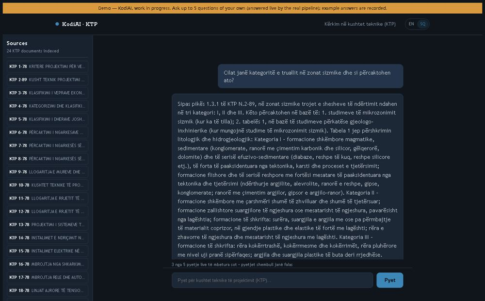

KTP Search (RAG)
AI search over Albania's 24 technical design codes. Every answer cites the numbered clause it comes from, and citations are checked against the retrieved text.
Try: an example question, then ask a follow-up of your own (5 live questions per visitor).
Next.js · TypeScript · Postgres (PGlite) · DeepSeek via OpenRouter · 80-question eval